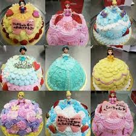

ブログ
7月27日 次にご紹介するのは、「ドルチェマリリッサ 表参道店」です。表参道駅からすぐのところにあります。毎日夜遅くまで営業しています。そのため、表参道で夜どこへ行こうか悩んでしまったとき時、こんなに可愛いカフェがあったらとても助かりますよね。 次にご紹介するのは、「パリヤ（PARIYA)」です。綺麗にクリームが塗られた可愛い形をしたショートケーキを食べることができます。青山のほかにも、日本橋、二子玉川でも可愛い形ショートケーキを食べることができます。また、テイクアウトも大丈夫なのが嬉しいです、 次にご紹介するのは、「グラッシェル（GLACIEL）」です。表参道駅からとほ3分ほどのところにあるカフェです。表参道の他にも北海道・札幌にも展開しています。テイクアウトや、オンラインショップもあるのがありがたいですよね。 秋ちゃんのケーキ
ミニケーキの種類
